The Cthulhu Mythos
Cthulhu Image
The Origin
The Cthulhu Mythos was created by Howard Philips Lovecraft, an English Writer born in 1890. Lovecraft was famous for his writing, as he quite literally invented a category of Science Fiction/Horror. A characteristic of his books is some unfathomable power beyond humanity, and the protagonist dying or being driven insane. In reality, he used this as an analogy for humans being insignificant in the universe, and how in the end, everything perishes. However, many readers don't know this or simply ignore it and choose to enjoy a good book about a giant tentacle monster destroying an island.
H.P. Lovecraft died at the age of 46, from intestinal cancer. However, his fellow writers took up his mantle and continued to write grand stories, adding in new Monsters, Worlds, and Horrors alike. Because of this, the books had an interconnected universe, with their giant monsters known as "Elder Gods" sometimes recurring. There was a variety of creatures and a unique overarching story, which is one of the most fascinating aspects. The universe gained the name "The Cthulhu Mythos" after a massive hit from the book "Call of Cthulhu", which was a story of a detective tracking down a cult of some Octopus-headed, Bat-Winged God. It ends as he manages to escape the island, a tomb of "Cthulhu", but ends up going insane as he turns back and sees the cyclopean hand reach out of the water...
For a synopsis of the events of the Cthulhu Mythos, the first creature was Azathoth. Azathoth is supposedly infinitely powerful, without limit, but completely oblivious to the existence of anything else. It created everything, but populated the universe with the Three- Nyarlathotep, Darkness, and the Nameless Mist, which is ironically the name of the mist. Nyarlathotep just walked away into Shadowrealm where he learned magic tricks. Darkness and Nameless Mist immediatley created babies out of themselves, created Yog-Sothoth (The Entity and Physical Manifestation of Time) and Shupnikkurat (The Great Mother). The two then produced many other creatures, for example, Yog-Sothoth created Hastur and they both created "Yug and Neb", and Shupnikkurat made Rhan-Tegoth. This went on for a while, with Cthulhu being lineage of Yug and Neb and in turn made many new Entities, but then there is Abudal Alhzared, an Insane Arabian who used ritualistic smelling salts to witness the Gods and their unholy creations. Eventually, he was eaten by an invisible space monster. All stories take place somewhere in some time, and discover a horrifying revalation of one of the Elder Gods or their malignant species (Mi-Go, Cthulhi, Yith, Great Polyps)
"The Oldest and Strongest emotion of Mankind is Fear, and the Oldest and Strongest fear is Fear of the Unknown." - H.P. Lovecraft
Most Popular Books
- Call of Cthulhu
- At the Mountains of Madness
- Shadow Over Innsmouth
Personal Favorite Monsters
- Nyarlathotep, The Skinless One
- Yog-Sothoth, The Gatekeeper
- Azathoth, the Blind, Idiot God
- The Nameless Mist
- Hastur, The King in Yellow
- Ghatanathoa, The Mountain-bound
- Abhoth, The Ceaseless Corruption
Mythos Trivia
- Only two of Lovecraft's Monsters are based off of something, Dagon, a Sea-Serpent, and Hastur, who was briefly mentioned in a book written a hundred years earlier.
- H.P. Lovecraft's work was not truly noticed and made popular until fifty years after his death.
- H.P. Lovecraft wrote on his deathbed that he didn't feel as though any of his books captured what he wanted, and that he was going to quit writing after he left the hospital.
- Lovecraft's friend, Robert Bloch, wrote a book that had a character who was the spitting image of Lovecraft, and the character was brutally killed. Lovecraft responded by making "Robert Blake", a character in one of his stories that was driven insane and killed, as a little running joke between the two.
List of "Elder Gods"
| Elder Gods |
What They Do |
How They Look |
Azathoth |
Azathoth is the King of everything, in the Mythos, everything is just a vivid dream of Azathoth's, that will be destroyed when it awakes. |
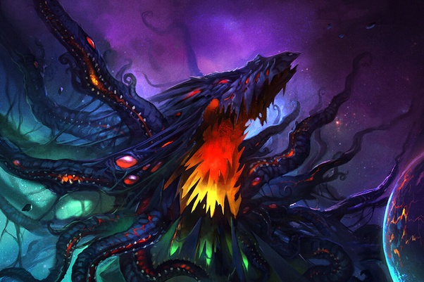 |
| Nyarlathotep |
One of the First Three of Azathoth, the "Messenger of the Old Gods." Nyarlathotep, unlike Azathoth, has sentience, therefore he is considered the most powerful of the Gods. |
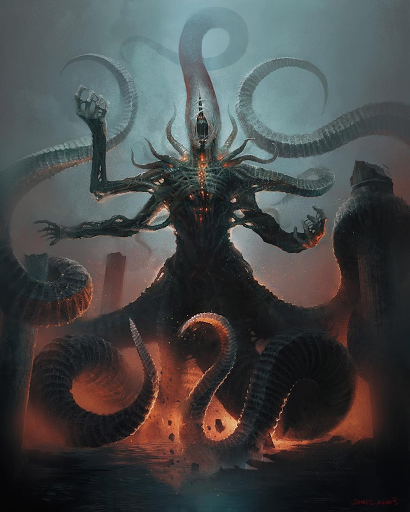 |
| Nameless Mist |
Another of the First Three of Azathoth, a giant misty figure that fused with darkness to form more Elder Gods. |
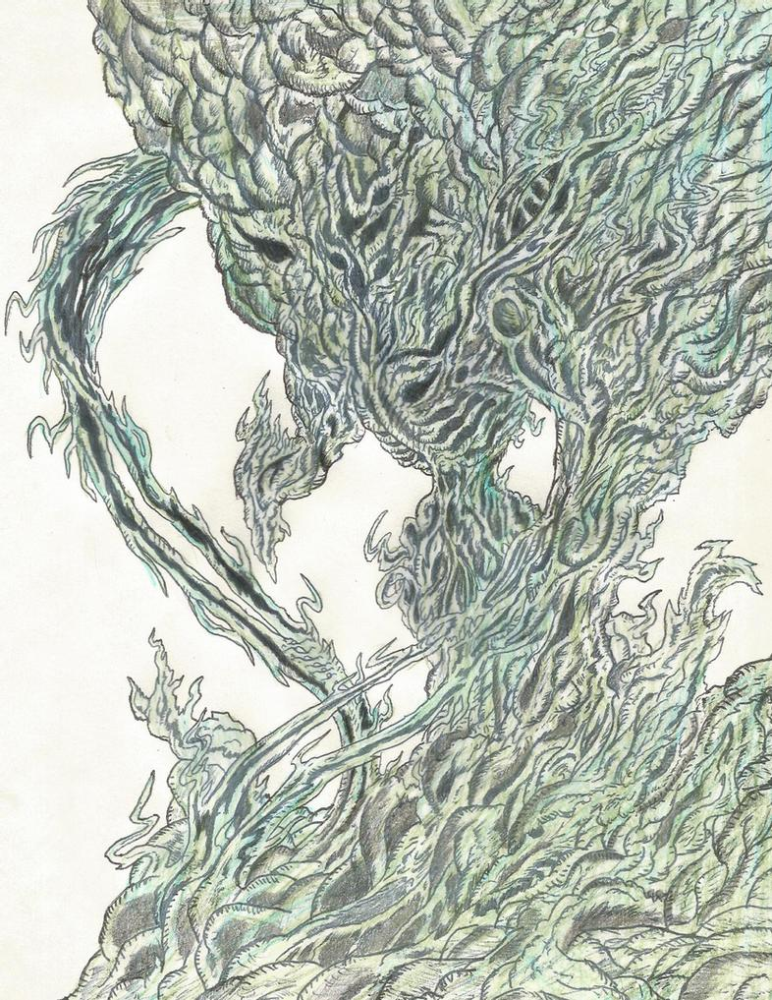 |
| Darkness |
The last of Azathoth's children, Darkness is the entropic force of the absence of Light. It became one with the Nameless Mist. |
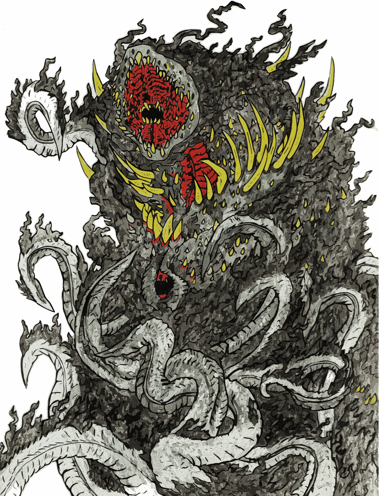 |
| Yog-Sothoth |
Child of the Mist/Darkness, Yog-Sothoth is a powerful creature that shares knowledge with mortals. It represents time, but was locked out of the dimension by unknown forces. |
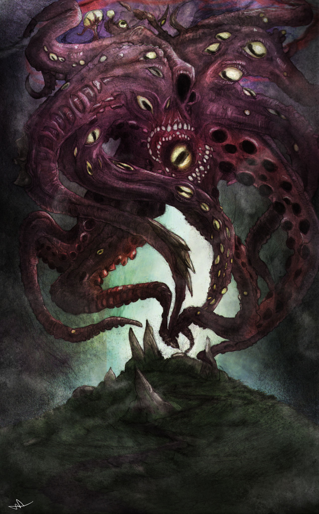 |
| Shupnikkurat |
The Great Mother, Shupnikkurat constantly extrudes and consumes thousands of young, the survivors escaping to feed upon innocents and start Heathen cults. |
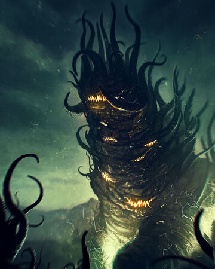 |
| Hastur |
Hastur is a distant entity, living in a Golden City beneath two suns, where he grows his city so he may consume it all and ascend to Godhood once more, and is a child of Yog-Sothoth. |
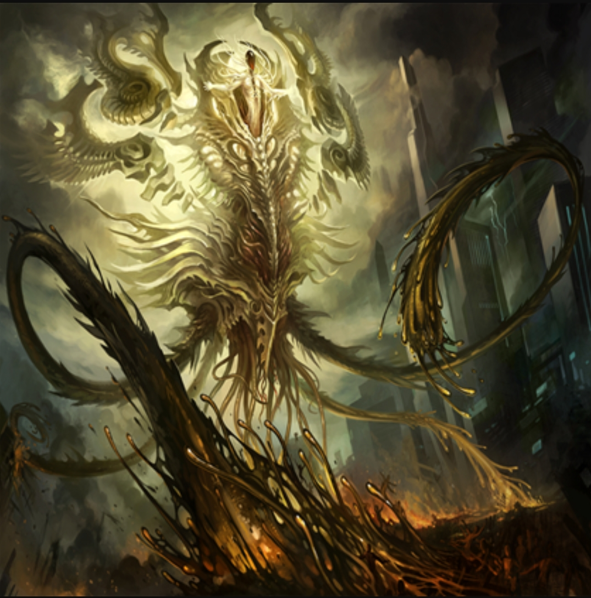 |
| Cthulhu |
Cthulhu is the grandson of Shupnikkurat and Yog-Sothoth, and the most popular. He is the Diviner and Priest of the Elder Gods, and is supposedly the first that shall awaken. |
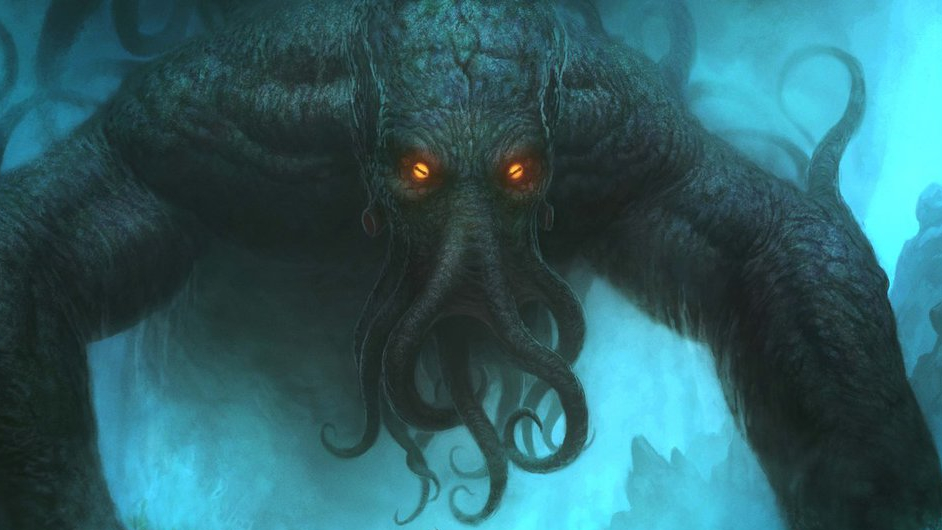 |
| Ithaqua |
Ithaqua is the offspring of Hastur. It is a grotesqu, long- limbed humanoid with glowing red eyes that marks those that intrude upon its icy realm as prey. Based off of the Wendigo. |
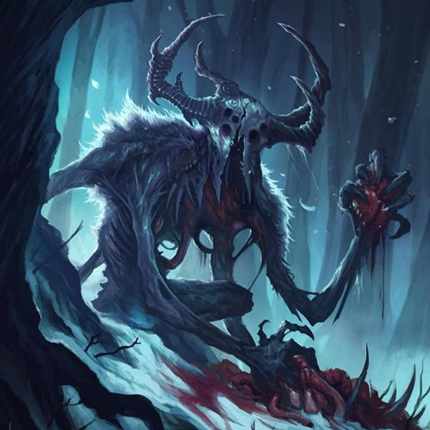 |
| Dagon & Hydra |
The two are grand, cyclopean fish monsters that live in the Sea. They spawned the "Deep Ones", a race of fish-people. They have some strange relation to Cthulhu. |
 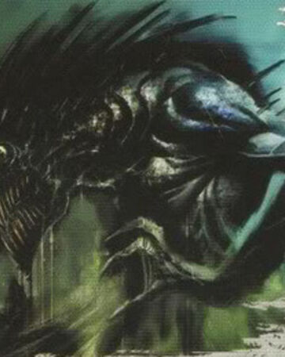 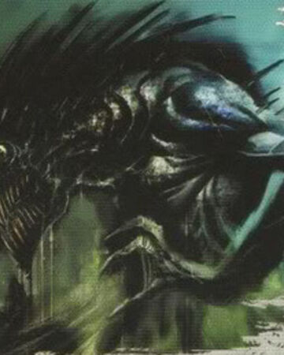 |
| Abhoth |
Abhoth is a ginormous, ooze-like creature that resides in the Mountain-Portal to the Elder Gods' Realm. It is a Gatekeeper to ensure the Elder Gods awaken when they must, and grows indefinitely. |
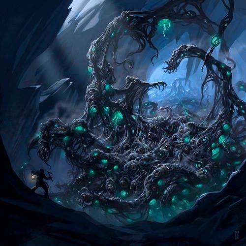 |
| Atlach-Nacha |
Atlach-Nacha is another gatekeeper of the Portal to the Elder Gods' Realm, and is a grotesque human-skulled spider of extreme proportions. |
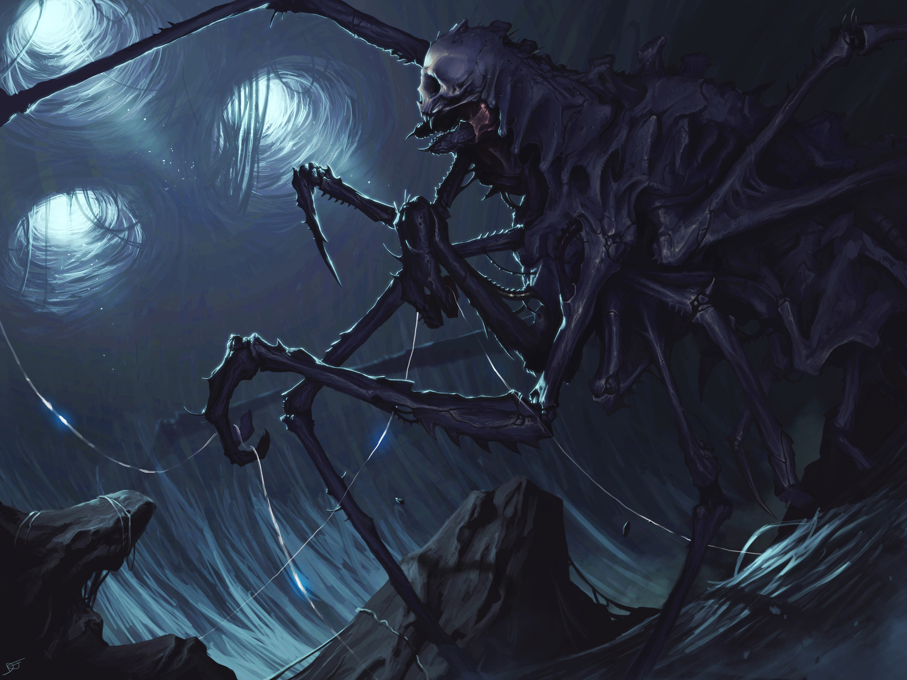 |